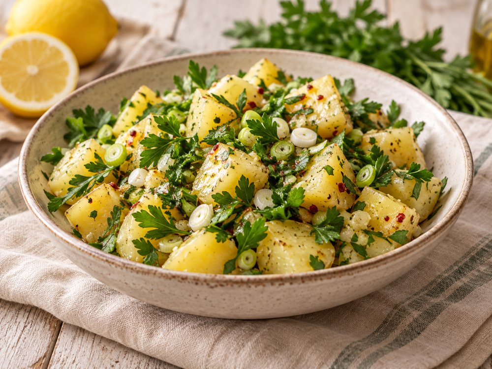
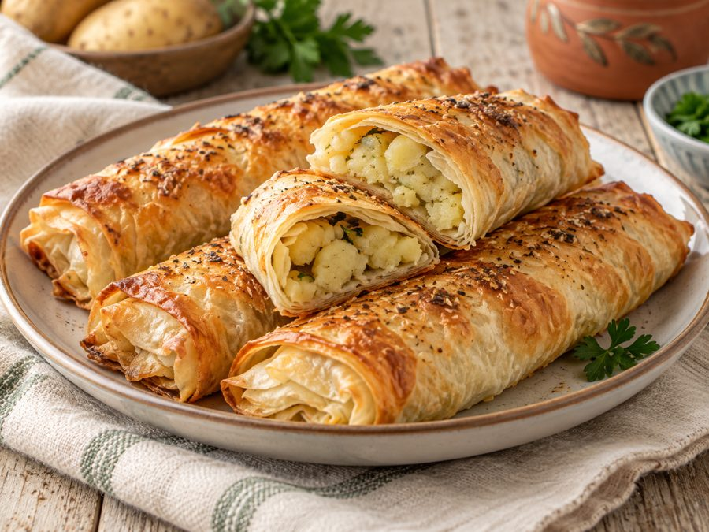
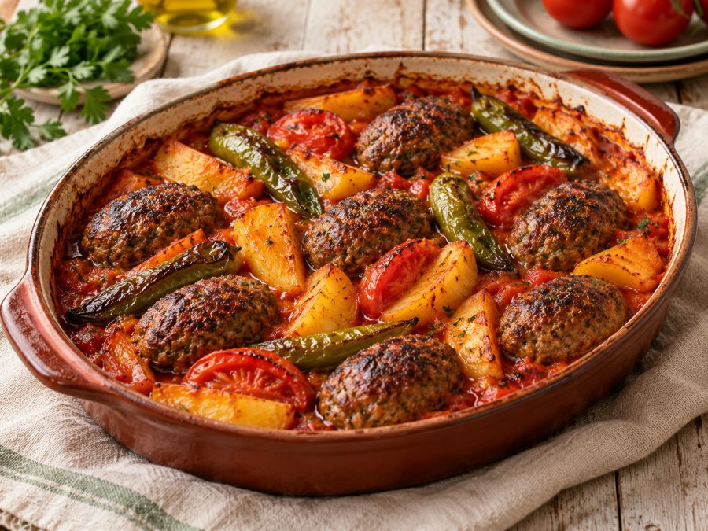
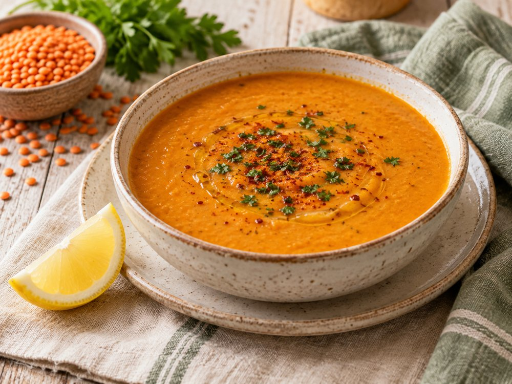

Anne Mutfağından Sana
Patatesle Ne Yapılır?
Patatesi salatada, börekte, çorbada veya fırın yemeğinde değerlendir.
Hangi tarifi seçmeli?
Patatesin rolü tarife göre değişir: salatada ana malzeme, çorbada kıvam veren yardımcı, köftenin yanında ise tamamlayıcıdır. Dilimleri eşit kesmek fırında daha eşit pişmesini sağlar. Evdeki diğer malzemeleri seçerek uygun olanı malzeme aracında da bulabilirsin.


Hazır yufkayla hazırlanan, dışı çıtır ve içi bol patatesli fırın böreği.

Salçalı sosla pişen köfte ve patatesin aynı tepside buluştuğu doyurucu yemek.

İnce patates dilimlerinin sütle yumuşayıp kaşarla kızardığı sıcak bir eşlikçi.

Tarifi sofrana göre ayarla
Tarif sayfasındaki miktar düğmeleriyle malzemeleri ayarla. Pişirmeye başlamadan önce tam malzeme listesini oku; eksikleri alışveriş listene ekle. Evdeki malzemelerle tarif bul veya hazır menülere göz at.